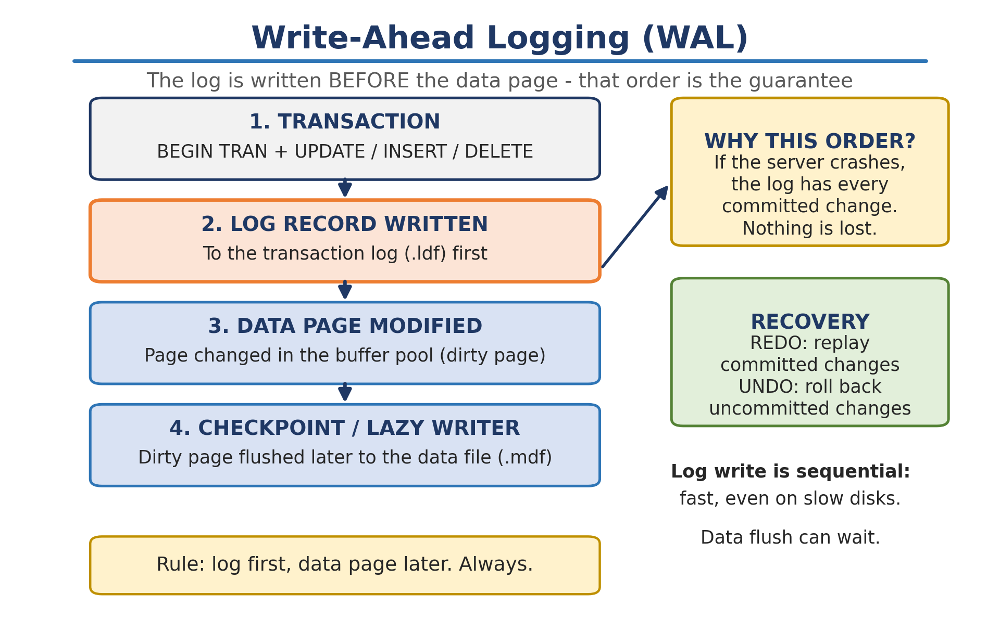
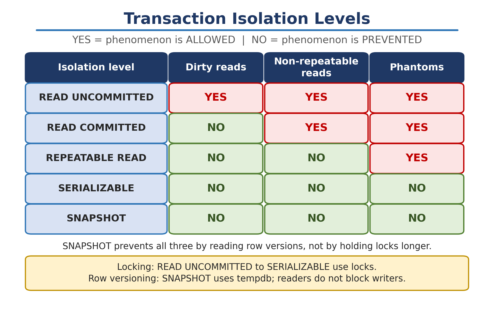
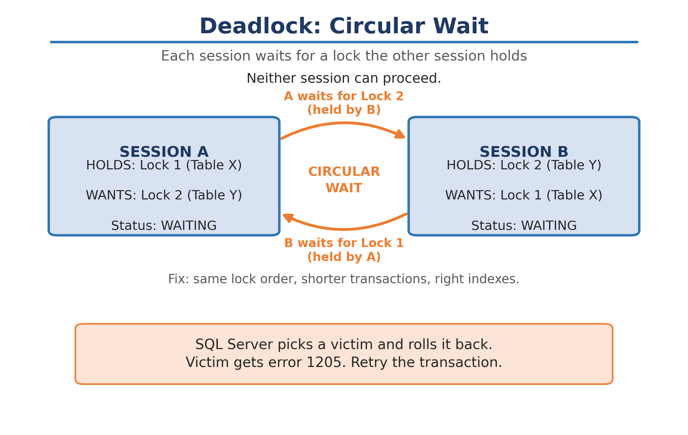

Chapter 9: Transactions, Locking & Isolation
Transactions and locking decide whether concurrent users see correct data or corrupt each other's work. This chapter covers how SQL Server isolates transactions, what locks it takes, and how to diagnose blocking and deadlocks. The goal is to explain trade-offs clearly in an interview, not just to name the isolation levels.
In this chapter:
Key learning: Isolation is a trade-off between correctness and concurrency, and every level buys stronger guarantees with more locking or more versioning. A strong answer names the phenomenon prevented, the cost paid, and the symptom you would check first when blocking or deadlocks appear.
Q91. What are the ACID properties of a transaction, and why does each one matter?
Answer: A transaction is a unit of work that must succeed or fail as a whole. The ACID properties describe the guarantees SQL Server gives for that unit of work.
In practice, use explicit transactions for multi-statement changes that must stay together, keep them short, and handle errors with rollback so a partial update never becomes permanent.
BEGIN TRANSACTION;
UPDATE dbo.Orders
SET Status = 'Shipped'
WHERE OrderID = 101;
INSERT INTO dbo.OrderAudit (OrderID, OldStatus, NewStatus, ChangedOn)
VALUES (101, 'Paid', 'Shipped', GETDATE());
COMMIT TRANSACTION;Key learning: ACID means a transaction is all or nothing, leaves data valid, hides partial work from others, and survives a crash once committed.

Q92. What are the isolation levels in SQL Server, and how do READ UNCOMMITTED, READ COMMITTED, REPEATABLE READ, SERIALIZABLE, and SNAPSHOT differ?
Answer: An isolation level controls how much one transaction is protected from changes made by concurrent transactions. Stronger isolation prevents more read phenomena but costs more locking or versioning.
SNAPSHOT must be enabled at the database level before a session can use it. A separate database option called READ_COMMITTED_SNAPSHOT changes READ COMMITTED to use row versions instead of shared locks, without changing the isolation level name in code.
SET TRANSACTION ISOLATION LEVEL READ COMMITTED;
SELECT OrderID, TotalAmount
FROM dbo.Orders
WHERE CustomerID = 12;
SET TRANSACTION ISOLATION LEVEL SNAPSHOT;
SELECT OrderID, TotalAmount
FROM dbo.Orders
WHERE CustomerID = 12;Key learning: Higher isolation prevents more read phenomena but costs more locking or versioning, so the default fits most work and stronger levels need a clear reason.

Q93. What are dirty reads, non-repeatable reads, and phantom reads, and which isolation levels prevent each one?
Answer: These three phenomena describe ways a transaction can see inconsistent data when other transactions change data at the same time.
READ UNCOMMITTED allows all three. READ COMMITTED prevents dirty reads only. REPEATABLE READ prevents dirty reads and non-repeatable reads. SERIALIZABLE and SNAPSHOT prevent all three, with SERIALIZABLE using range locks and SNAPSHOT using a consistent version of the data.
SET TRANSACTION ISOLATION LEVEL READ UNCOMMITTED;
SELECT OrderID, TotalAmount
FROM dbo.Orders
WHERE OrderID = 101;
SET TRANSACTION ISOLATION LEVEL REPEATABLE READ;
BEGIN TRANSACTION;
SELECT OrderID, TotalAmount
FROM dbo.Orders
WHERE CustomerID = 12;
SELECT OrderID, TotalAmount
FROM dbo.Orders
WHERE CustomerID = 12;
COMMIT TRANSACTION;Key learning: Dirty reads see uncommitted data, non-repeatable reads see changed rows, and phantoms see changed row sets, with each stronger isolation level removing one more risk.
Q94. What are the main lock modes in SQL Server, including shared, exclusive, update, intent, schema, bulk update, and key-range locks?
Answer: A lock mode states what a transaction intends to do with a resource, and compatibility between modes decides whether a second transaction must wait.
Exclusive locks are incompatible with everything, shared locks are compatible with each other, and intent locks make those checks fast at table and page level.
SELECT OrderID, TotalAmount
FROM dbo.Orders WITH (UPDLOCK)
WHERE OrderID = 101;
SELECT request_session_id, resource_type, resource_description, request_mode, request_status
FROM sys.dm_tran_locks
WHERE resource_database_id = DB_ID();Key learning: Each lock mode states an intent to read, write, or change structure, and incompatible modes are what make one session wait for another.
Q95. What is lock granularity, and when and why does SQL Server escalate locks from row or page to table level?
Answer: Lock granularity is the size of the resource a lock covers. SQL Server can lock a row or index key, a page, an extent, a partition, a table, or a database. Finer locks allow more concurrency because fewer rows are blocked, but they cost more memory and CPU to manage.
Lock escalation is the automatic replacement of many fine-grained locks with one coarser lock to reduce that overhead. It typically happens when a single statement holds more than 5,000 locks on one table or partition, or when lock memory pressure rises. The result is usually a table lock, or a partition lock when partition-level escalation is enabled, and it can increase blocking because the whole table or partition is now locked.
You can influence escalation with the LOCK_ESCALATION table option, using TABLE, PARTITION, AUTO, or DISABLE, and with hints such as ROWLOCK, PAGLOCK, or TABLOCK. Disabling escalation is rarely the right fix, because it trades blocking for lock memory pressure, so the better fix is usually shorter transactions and better indexes that touch fewer rows.
SELECT OrderID, TotalAmount
FROM dbo.Orders WITH (ROWLOCK)
WHERE CustomerID = 12;
SELECT OrderID, TotalAmount
FROM dbo.Orders WITH (TABLOCK)
WHERE CustomerID = 12;
ALTER TABLE dbo.Orders SET (LOCK_ESCALATION = TABLE);Key learning: Finer locks allow more concurrency but cost more overhead, so SQL Server escalates to a coarser lock when one statement holds too many locks on one object.
Q96. How do you find blocking sessions and identify the head blocker using sys.dm_exec_requests and blocking_session_id?
Answer: Blocking happens when one session holds a lock that another session needs, so the waiting session shows a lock wait type such as LCK_M_S or LCK_M_X. The column blocking_session_id in sys.dm_exec_requests holds the session id of the blocker, or zero when the session is not blocked.
To find the chain, list sessions with a non-zero blocking_session_id, then follow those ids upward until you reach the head blocker, which blocks others but has a blocking_session_id of zero itself. Join to sys.dm_exec_sessions for login, host, and program details, and use sys.dm_exec_sql_text to see what each session is running. Check how long each session has waited, whether the blocker has an open transaction, and whether it is idle in an application or stuck in a long statement.
Fix the root cause, not just the waiters. Common causes are an uncommitted transaction left open, a long batch holding locks, and a missing index forcing a scan that locks far more rows than needed.
SELECT r.session_id, r.blocking_session_id, r.wait_type, r.wait_time, s.login_name, s.host_name, t.text
FROM sys.dm_exec_requests AS r
JOIN sys.dm_exec_sessions AS s ON s.session_id = r.session_id
CROSS APPLY sys.dm_exec_sql_text(r.sql_handle) AS t
WHERE r.blocking_session_id <> 0;
SELECT r.session_id, r.status, r.wait_type, s.login_name, t.text
FROM sys.dm_exec_requests AS r
JOIN sys.dm_exec_sessions AS s ON s.session_id = r.session_id
CROSS APPLY sys.dm_exec_sql_text(r.sql_handle) AS t
WHERE r.blocking_session_id = 0
AND r.session_id IN (SELECT blocking_session_id FROM sys.dm_exec_requests WHERE blocking_session_id <> 0);Key learning: Follow blocking_session_id up the chain to the head blocker, then fix the long transaction or missing index that holds the locks instead of only treating the waiting sessions.
Q97. What causes a deadlock, how do you read a deadlock graph, how is the victim chosen, and how can you reduce deadlocks?
Answer: A deadlock is a circular wait for locks, where each of two or more transactions holds a lock the other one needs. A classic cause is two transactions updating the same tables in opposite order, and other causes include lock escalation, key-range locks, missing indexes that widen the locked set, and long transactions that hold locks while waiting for more.
SQL Server detects the cycle, picks one transaction as the victim, rolls it back, and returns error 1205 to the victim. The victim is chosen by the lowest deadlock priority first, and then by the lowest estimated cost to roll back, usually measured by log bytes used. The surviving transaction continues, and the victim application should retry the failed transaction.
The deadlock graph is XML that lists the processes involved, the locks each one holds and waits for, the victim, and the SQL text and execution stack for each process. You can capture it from the system_health Extended Events session, from an xml_deadlock_report event session, or in the error log with trace flag 1222.
To reduce deadlocks, access tables in the same order everywhere, keep transactions short, add indexes so statements lock fewer rows, avoid user interaction inside a transaction, and consider row versioning where read-write deadlocks dominate.
DBCC TRACEON (1222, -1);
SELECT CAST(xet.target_data AS XML) AS deadlock_xml
FROM sys.dm_xe_session_targets AS xet
JOIN sys.dm_xe_sessions AS xe ON xe.address = xet.event_session_address
WHERE xe.name = 'system_health'
AND xet.target_name = 'ring_buffer';Key learning: Deadlocks come from circular waits over locks, and consistent access order, short transactions, and good indexes prevent most of them.

Animated: the circular wait that never ends on its own.
Green arrows are locks already held. The red dashed arrows are waits — and they chase each other in a circle, so nobody ever moves. SQL Server breaks it by picking a victim and returning error 1205.
Q98. How does snapshot isolation work, and where does the version store live?
Answer: Snapshot isolation is optimistic. When a transaction starts under SNAPSHOT, it sees a consistent view of committed data as of the start of the transaction, and it keeps seeing that view even if other transactions commit changes afterward. Readers do not block writers and writers do not block readers, because readers are served from row versions instead of waiting for locks.
Writers still block writers. When a row is updated, SQL Server stores the previous committed version in the version store, and each row carries a pointer to its version chain. If two snapshot transactions both try to update the same row, the second one to commit fails with update conflict error 3960, and the application must retry.
The version store lives in TempDB only, is never backed up, and starts empty after a restore or restart. The ALLOW_SNAPSHOT_ISOLATION setting travels with the database, so a restored database keeps the setting, but the version store itself does not travel with it and must be rebuilt by new version-generating work. Versioning adds a 14-byte versioning tag to each versioned row and grows TempDB, and a long-running snapshot transaction delays cleanup of versions it might still need.
ALTER DATABASE SalesDB SET ALLOW_SNAPSHOT_ISOLATION ON;
GO
SET TRANSACTION ISOLATION LEVEL SNAPSHOT;
BEGIN TRANSACTION;
SELECT OrderID, TotalAmount
FROM dbo.Orders
WHERE CustomerID = 12;
COMMIT TRANSACTION;
SELECT DB_NAME(database_id) AS database_name, reserved_page_count, reserved_space_kb
FROM sys.dm_tran_version_store_space_usage;Key learning: Snapshot isolation lets readers see a consistent old version from TempDB instead of waiting on locks, at the cost of version-store overhead and possible update conflicts.
Q99. What is READ_COMMITTED_SNAPSHOT, how do you enable it, and what are its behavior and trade-offs?
Answer: READ_COMMITTED_SNAPSHOT, often shortened to RCSI, changes the behavior of READ COMMITTED so reads use row versions instead of shared locks. Each statement sees the last committed version of each row as of the start of that statement, so readers do not block writers and writers do not block readers, and no dirty reads occur. Unlike full SNAPSHOT isolation, consistency is statement-level, so two statements in the same transaction can see different data if another transaction commits between them.
No code change is needed, because applications keep using READ COMMITTED and get versioned reads automatically once the option is on. Writers still block writers, and update conflicts do not occur under RCSI in the same way as under SNAPSHOT, because each statement simply reads the latest committed version.
To enable it, run ALTER DATABASE with SET READ_COMMITTED_SNAPSHOT ON. Enabling requires exclusive access to the database, so open transactions block it unless you terminate them, which is why WITH ROLLBACK IMMEDIATE is often used during a maintenance window. The READ_COMMITTED_SNAPSHOT setting travels with the database, while the version store lives in TempDB only, is never backed up, and starts empty after a restore or restart. The trade-offs are TempDB growth, the 14-byte versioning tag on versioned rows, and extra work on every update to maintain versions.
ALTER DATABASE SalesDB SET READ_COMMITTED_SNAPSHOT ON WITH ROLLBACK IMMEDIATE;
GO
SELECT name, is_read_committed_snapshot_on, snapshot_isolation_state_desc
FROM sys.databases
WHERE name = 'SalesDB';
SET TRANSACTION ISOLATION LEVEL READ COMMITTED;
SELECT OrderID, TotalAmount
FROM dbo.Orders
WHERE CustomerID = 12;Key learning: READ_COMMITTED_SNAPSHOT keeps the READ COMMITTED name but serves reads from row versions, removing most read blocking at the cost of TempDB version-store work.
Q100. What is the difference between optimistic and pessimistic concurrency control, and when should you use each one?
Answer: Pessimistic concurrency assumes conflicts will happen, so it locks data on read to prevent other transactions from changing it. Techniques include holding shared locks under REPEATABLE READ or SERIALIZABLE, and using UPDLOCK with HOLDLOCK for a read-then-update pattern. Pessimistic control suits high-contention updates and short critical sections where a conflict would be expensive, but it costs blocking and deadlock risk.
Optimistic concurrency assumes conflicts are rare, so it reads without locking and checks for a conflict only at write time. In SQL Server this means SNAPSHOT and READ_COMMITTED_SNAPSHOT using row versions, and in application code it often means checking a rowversion column before updating. Optimistic control suits read-heavy workloads and long-running reads, but it costs version-store overhead and requires retry logic when an update conflict occurs.
Choose pessimistic control when correctness depends on preventing a concurrent change, and optimistic control when reads must stay fast and conflicts are uncommon enough that retries are cheap.
SET TRANSACTION ISOLATION LEVEL REPEATABLE READ;
BEGIN TRANSACTION;
SELECT OrderID, TotalAmount
FROM dbo.Orders WITH (UPDLOCK, HOLDLOCK)
WHERE OrderID = 101;
UPDATE dbo.Orders
SET TotalAmount = TotalAmount + 10
WHERE OrderID = 101;
COMMIT TRANSACTION;
SET TRANSACTION ISOLATION LEVEL SNAPSHOT;
SELECT OrderID, TotalAmount
FROM dbo.Orders
WHERE OrderID = 101;Key learning: Pessimistic control locks early to prevent conflicts, while optimistic control reads freely and detects conflicts only at write time.
Q101. What does the NOLOCK hint do, and what are the risks of using it?
Answer: NOLOCK is a table hint that applies READ UNCOMMITTED behavior to that table only. The query takes no shared locks, so it does not wait for writers and does not block them, but it can read uncommitted data that may later roll back. A schema stability lock is still taken, so NOLOCK does not mean no locks at all.
The risks go beyond dirty reads. Because pages can split and rows can move while the scan runs, a NOLOCK query can miss rows entirely, return the same row twice, or fail with error 601 when data movement makes the scan unsafe to continue. Totals, counts, and row-by-row results can all be wrong, and the error is silent except when the scan fails outright.
Use NOLOCK only for rough estimates and non-critical reporting where wrong or partial results are acceptable. Never use it for financial totals, inventory, auditing, or any result that must be correct. The safer fixes for read blocking are better indexes, shorter transactions, and row versioning through SNAPSHOT or READ_COMMITTED_SNAPSHOT.
SELECT OrderID, TotalAmount
FROM dbo.Orders WITH (NOLOCK)
WHERE CustomerID = 12;
SET TRANSACTION ISOLATION LEVEL READ UNCOMMITTED;
SELECT OrderID, TotalAmount
FROM dbo.Orders
WHERE CustomerID = 12;Key learning: NOLOCK trades correctness for speed by skipping shared locks, so it must never be used where the result has to be right.
Q102. What is delayed durability, and when is it safe to use?
Answer: With normal, fully durable transactions, COMMIT returns only after the log records are flushed to disk, so a crash can never lose a committed transaction. With delayed durability, COMMIT returns before the log flush: the log records sit in a memory buffer and are flushed when the buffer fills to about 60KB, roughly every millisecond, when a fully durable transaction commits, or when sys.sp_flush_log is called. Skipping the flush per commit removes WRITELOG waits, which is why it helps high-throughput workloads where log write latency is the measured bottleneck.
The price is durability: a crash, a failover, or an unexpected shutdown loses every committed-but-unflushed transaction, and the application was already told those transactions succeeded. Delayed durability is not supported with transactional replication or change data capture, and cross-database or distributed transactions are always fully durable regardless of the setting. It works with Availability Groups, but a delayed-durable transaction is not guaranteed to have reached a secondary either, even a synchronous one, so failover can lose it too.
Enable it at the database level with DELAYED_DURABILITY set to ALLOWED, which lets individual transactions opt in, or FORCED, which applies it to every transaction. Use it only where the data can be regenerated: staging tables, ETL scratch data, or telemetry that can be replayed. Never use it for orders, payments, or anything the application acknowledges to a user as complete.
-- Allow individual transactions to opt in
ALTER DATABASE StagingDB SET DELAYED_DURABILITY = ALLOWED;
-- In the loader only: fast commits, then flush at the end of the step
BEGIN TRANSACTION;
INSERT INTO dbo.StagingOrders SELECT * FROM dbo.OrderFeed;
COMMIT TRANSACTION WITH (DELAYED_DURABILITY = ON);
EXEC sys.sp_flush_log;
SELECT name, delayed_durability_desc
FROM sys.databases
WHERE name = 'StagingDB';Key learning: Delayed durability returns from COMMIT before the log flush, which removes WRITELOG waits but can lose committed transactions on a crash, so use it only for regenerable data and never for money.
Q103. How do you kill a blocking session safely, and what rollback considerations apply?
Answer: Start by identifying the session precisely. Check the session id, login, host, program, SQL text, status, and open transaction count, and confirm it is the head blocker rather than another victim waiting behind it. In production, check with the application owner when possible, and first try to get the owner to commit or roll back, because killing is disruptive and cannot be undone.
KILL starts a rollback of the session's open transaction, and the session's locks are held until that rollback completes. Rollback can take as long as, or longer than, the original work, because every change must be undone from the log, and it cannot be cancelled or sped up by restarting SQL Server, since recovery would still have to roll the transaction back. Monitor progress with percent_complete in sys.dm_exec_requests and with KILL WITH STATUSONLY, and do not kill the same session repeatedly.
Never kill system sessions, and never assume KILL frees locks instantly. Record what was killed and why, and follow up on the root cause, such as an application leaving transactions open or a batch that should have been broken into smaller commits.
SELECT session_id, login_name, host_name, program_name, status, open_transaction_count
FROM sys.dm_exec_sessions
WHERE session_id = 75;
SELECT session_id, status, command, percent_complete
FROM sys.dm_exec_requests
WHERE session_id = 75;
KILL 75;
KILL 75 WITH STATUSONLY;Key learning: Killing a session starts a rollback that must finish before its locks release, so verify the session and its rollback cost before you kill it.
Q104. How do long-running transactions affect the transaction log and the version store?
Answer: A long-running transaction pins the oldest active part of the transaction log. Log space from the start of that transaction cannot be reused or truncated, even by log backups, so the log grows, virtual log files cannot be reused, and log_reuse_wait_desc shows ACTIVE_TRANSACTION. If the log fills, new writes fail until the transaction ends or the log is grown.
The same transaction also pins the version store. Versions created after the transaction started cannot be cleaned up while the transaction might still need them, so the version store in TempDB grows and TempDB can fill. Long transactions also hold locks longer, which increases blocking, and they delay ghost cleanup and other maintenance that depends on knowing no transaction needs an old row version.
Find long transactions with sys.dm_tran_active_transactions and sys.dm_tran_database_transactions, check DBCC OPENTRAN, and look at log and TempDB space together. Prevention is better than cleanup: commit promptly, batch large deletes and updates, never wait for user input inside a transaction, and never leave an open transaction in a query window.
SELECT a.transaction_id, a.name, a.transaction_begin_time,
DATEDIFF(SECOND, a.transaction_begin_time, GETDATE()) AS open_seconds,
d.database_transaction_log_bytes_used
FROM sys.dm_tran_active_transactions AS a
JOIN sys.dm_tran_database_transactions AS d ON d.transaction_id = a.transaction_id
WHERE d.database_id = DB_ID('SalesDB')
ORDER BY a.transaction_begin_time;
DBCC OPENTRAN ('SalesDB') WITH TABLERESULTS;
DBCC SQLPERF (LOGSPACE);Key learning: An open transaction pins both the transaction log and any version store rows it might still need, so long transactions grow the log and TempDB together.
QueryLab — Self-Hosted SQL Performance Workbench
EXPLAIN visualizer · Index advisor · Slow query dashboard · SQL Server